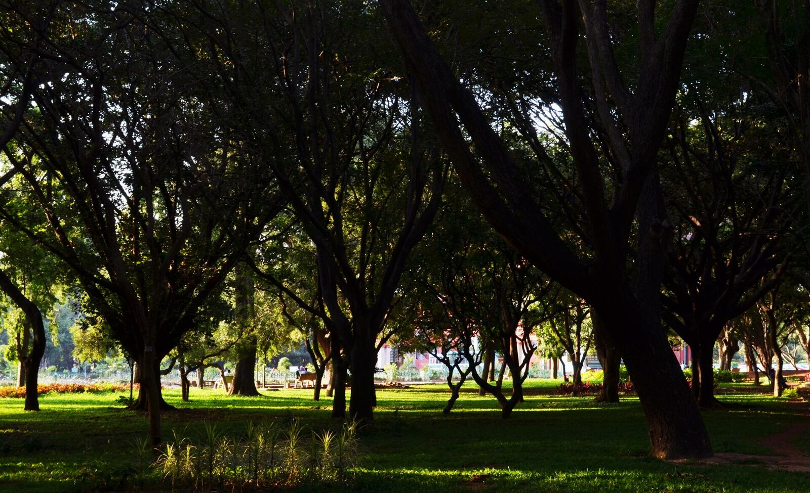
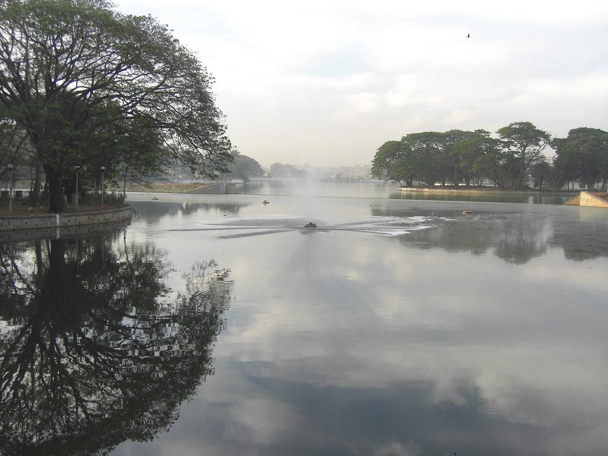
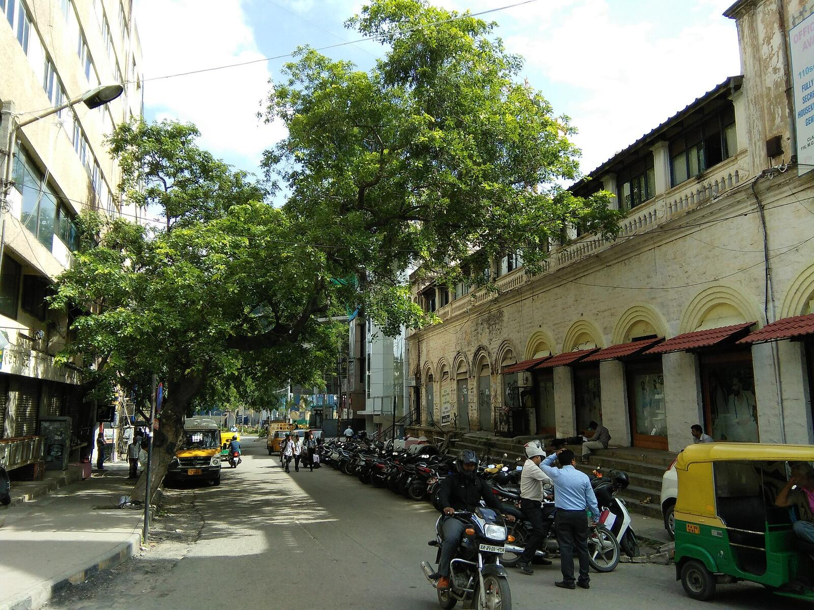
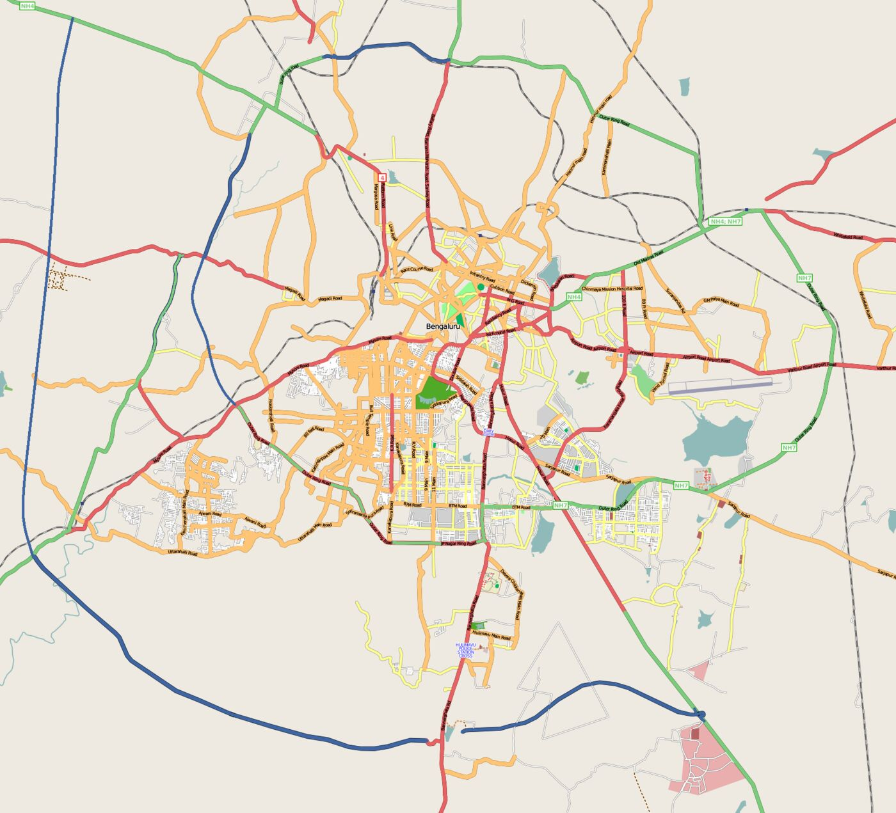
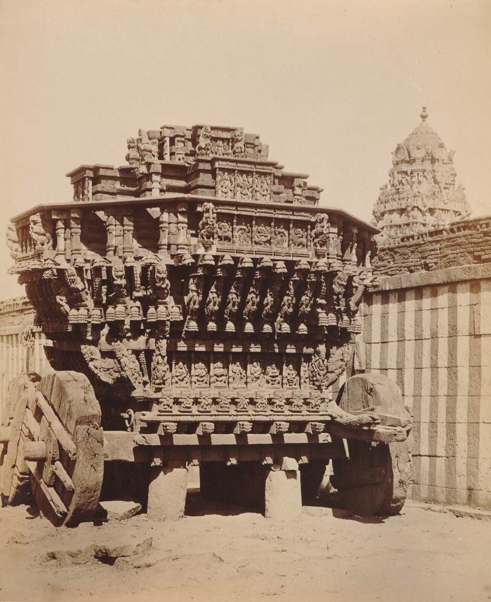
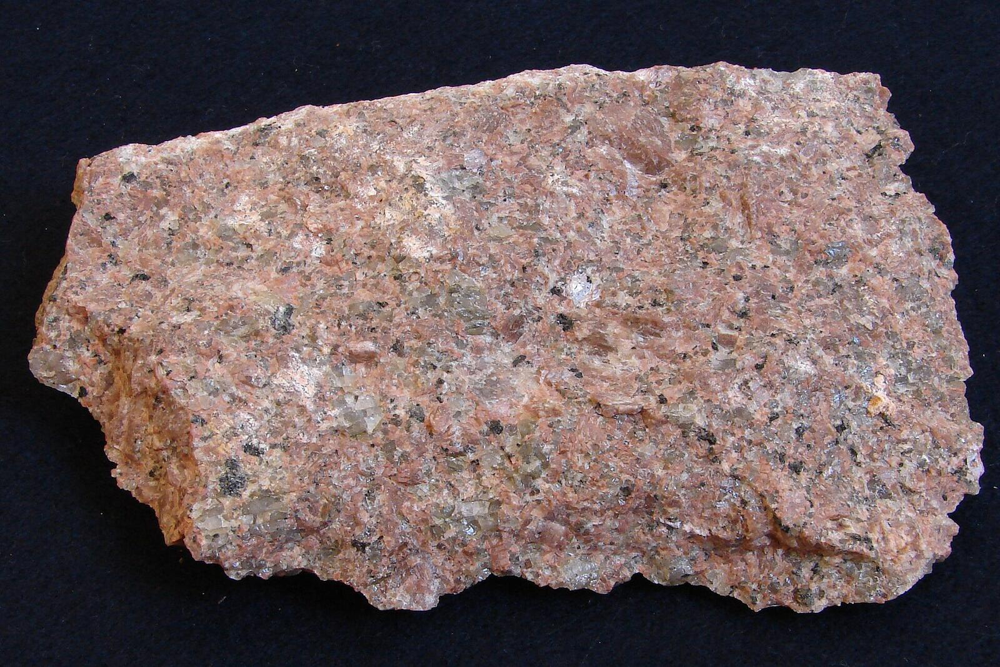

A cafe on Gangadhar Chetty Road in Sivanchetti Gardens, Bengaluru - rated 4.0 by 539 guests on Google.

Cafe Stone sits in Sivanchetti Gardens, one of Bengaluru's old garden neighbourhoods, a short walk from Ulsoor Lake.
Cafe Stone is a cafe at 24, Gangadhar Chetty Road, Sivanchetti Gardens, Bengaluru 560042.
Five hundred thirty-nine guests have rated it on Google, and it holds a 4.0. Call +91 95358 92088 and it is the cafe that picks up.




